Iceberg de la nourriture
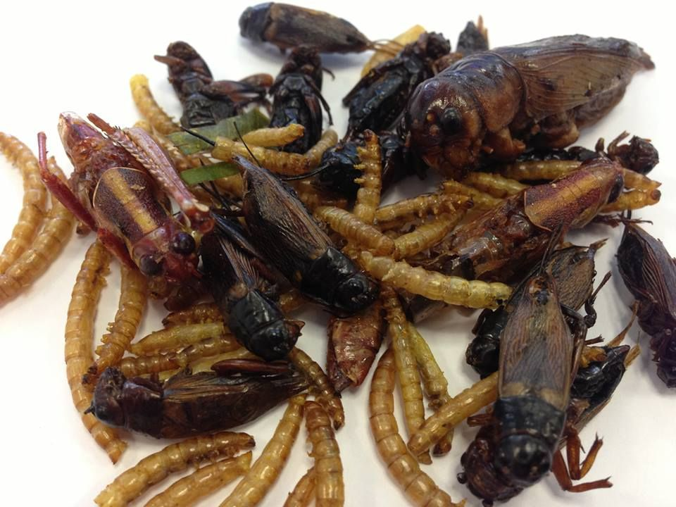
text
insectes grillés
Petit animal dont le corps est divisé en trois parties (tet, thorax, abdomen), qui a trois paires de pattes et qui porte des ailes. Il respire par la trachée et subit des métamorphose. Mais ici il est cuit et séché.
steak tartare
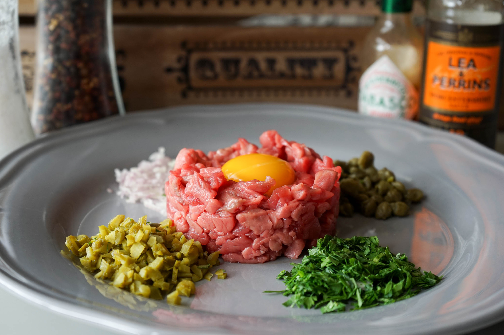Le steak tartare ou tartare est une recette à base de viande, de bœuf ou de cheval, crue, généralement hachée gros, ou coupée en petits cubes au couteau (d'où l'appellation de tartare au couteau).
viande brulée croustiante
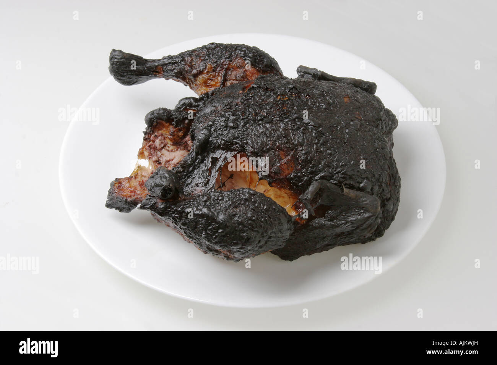De la viande restée un peu trop longtemps sur le barbecue. Et l’extérieur de la viande est devenu du charbon
verre de pisse veggie
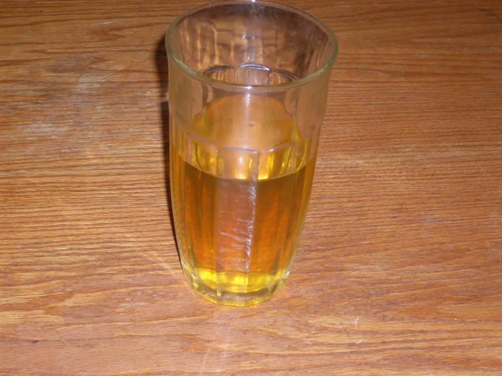L'urinothérapie (la pratique de boire ou d'appliquer son urine sur la peau pour traiter une maladie ou rester en bonne santé) est promue par ses partisans depuis des dizaines d'années. Mais en réalité ceci n’a aucun effets positifs sur le corps, voire dangereux pour les personnes souffrant d’hypertension.
oeuf de caille
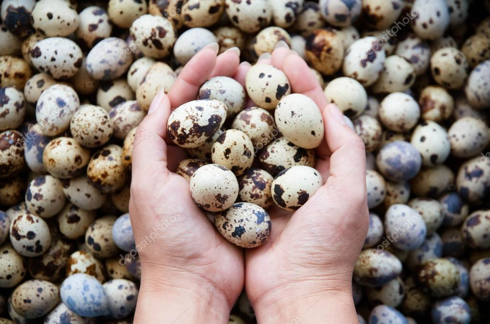L'œuf de caille est l'œuf pondu par un petit oiseau migrateur de la sous-famille des perdicinae, la caille du Japon. Les œufs de caille sont considérés comme un mets de choix dans de nombreuses parties du monde, y compris en Europe en Amérique de nord et en Inde.
escargots
 L'escargot est un mollusque gastéropode. Son corps mou, sans squelette, est protégé des prédateurs par une coquille enroulée dans laquelle il peut hiberner.
L'escargot est un mollusque gastéropode. Son corps mou, sans squelette, est protégé des prédateurs par une coquille enroulée dans laquelle il peut hiberner.
L'escargot est un mollusque gastéropode. Son corps mou, sans squelette, est protégé des prédateurs par une coquille enroulée dans laquelle il peut hiberner.
cuisses grenouilles
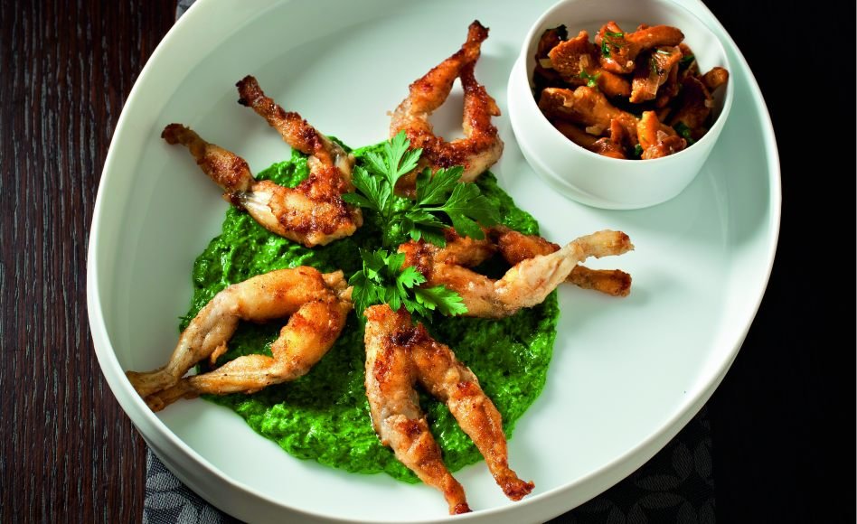Les cuisses de grenouille sont utilisées comme ingrédient principal ou secondaire dans des préparations culinaires de plusieurs pays situés dans au moins trois continents. En Europe, les Français en sont les plus gros consommateurs, la France en importe entre 3 000 et 4 000 tonnes par an.
langue de boeuf
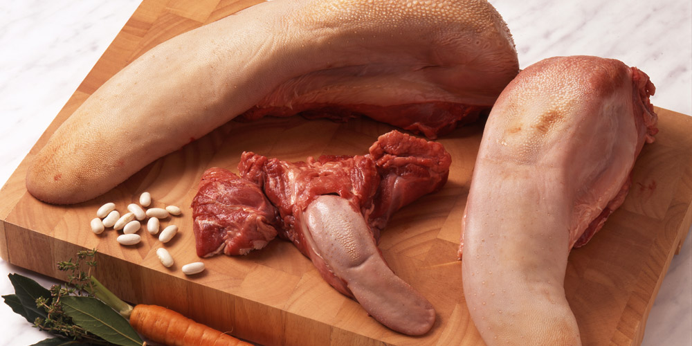Spécialité culinaire à base de langue de bovin
pattes poulet
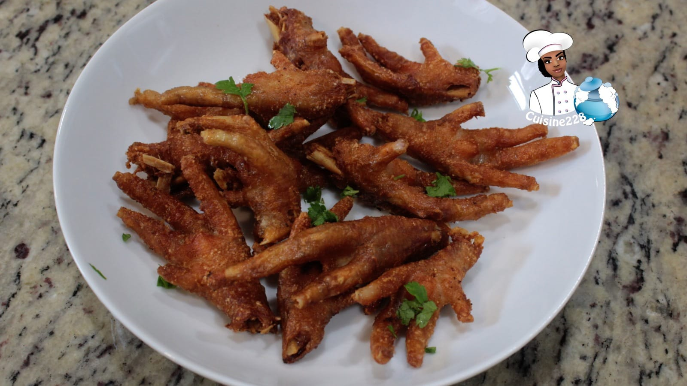Elles sont cuisinées dans plusieurs régions chinoises et peuvent être servies comme accompagnement à la bière, comme plat froid, en soupe ou en plat principal
cervelle porc
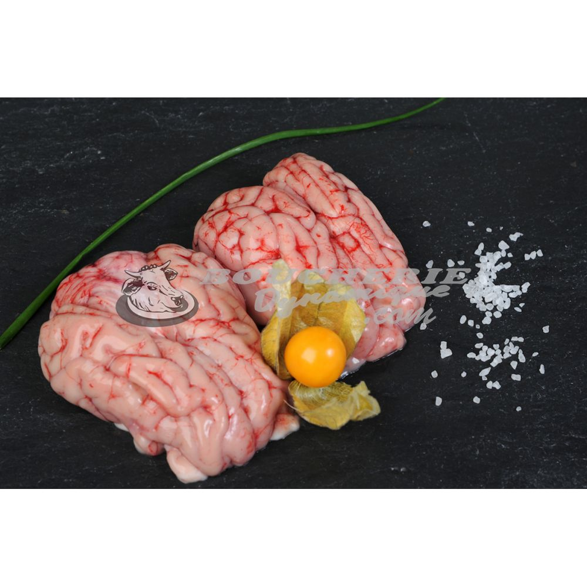La cervelle est le cerveau des animaux de boucherie. La cervelle doit toujours être consommée très fraîche, elle s'abîme très rapidement. Si vous ne pouvez pas faire cuire les cervelles immédiatement, les couvrir avec un linge humide pour qu'elles ne se dessèchent pas et conservez-les 24 heures maximum au réfrigérateur.
yeux thon
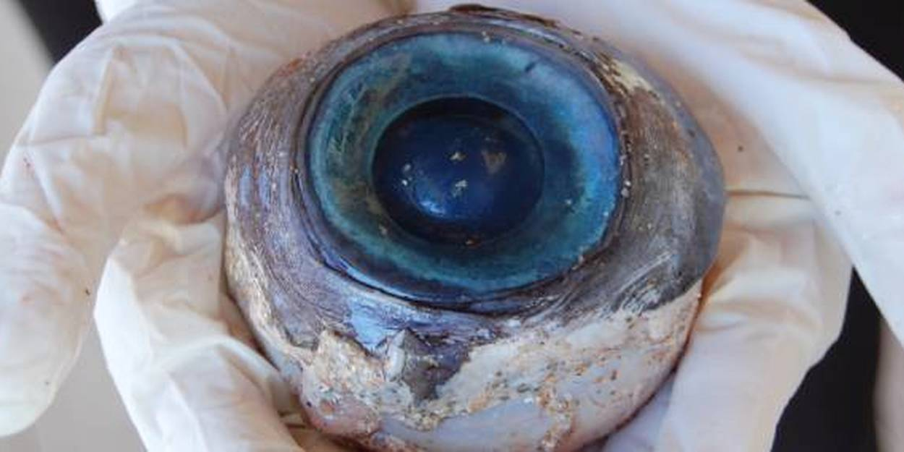L'œil cru lui-même a un goût assez intense, mais pas désagréable, que beaucoup comparent à un “sushi extrême”. Une fois cuits ils changent de couleur d'un aspect transparent à un blanc plus ferme, et les muscles et la graisse entourant le globe oculaire sont un mets de choix pour les consommateurs avertis.
haggis
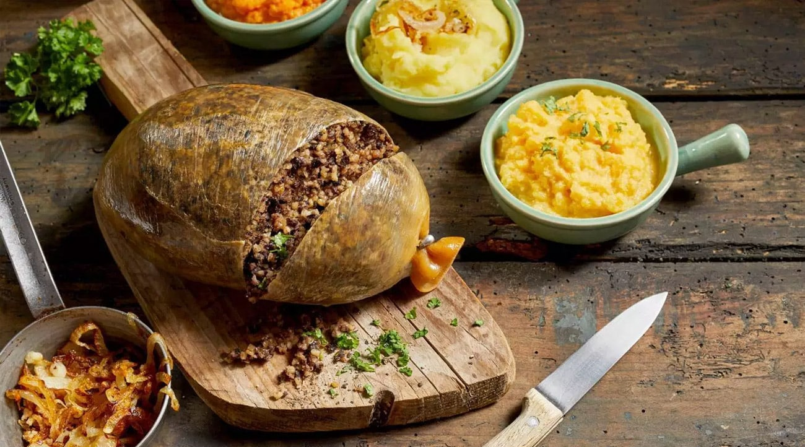Le haggis, ou panse de brebis farcie, est un plat traditionnellement Ecossais consistant en une panse de brebis farcie d'un hachis à base de viande, traditionnellement des abats de mouton, et d'avoine. Il fut très populaire au XVIIIe siècle dans la cuisine Ecossaise.
marmotte
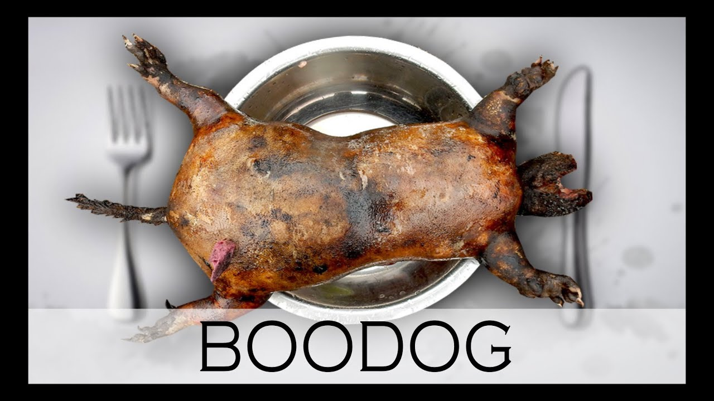La marmotte est consommée pour sa viande en Mongolie, dans un plat appelé « boodog », variante du « khorkhog », qui est lui généralement à base de mouton. C'est un des plats phares de la cuisine mongole. C'est un plat de fête consommé principalement pendant l'été.
Druken Shrimp
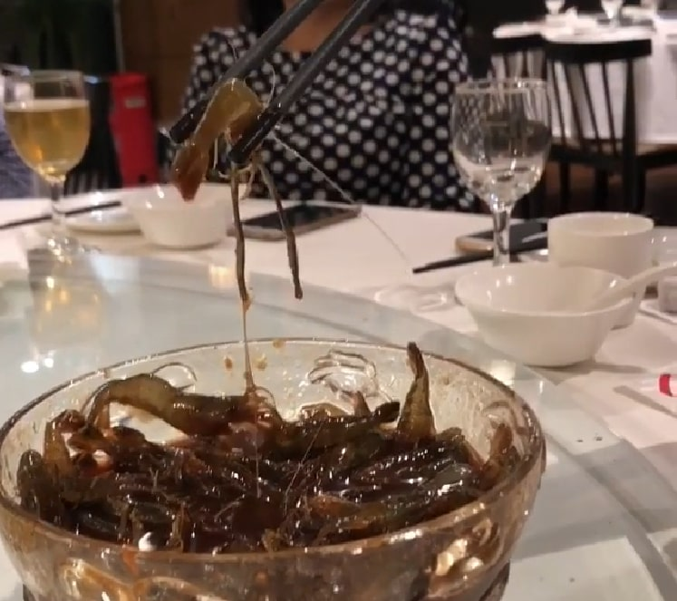Des crevettes plongées dans l'alcool dégustées vivantes.
lezard frit
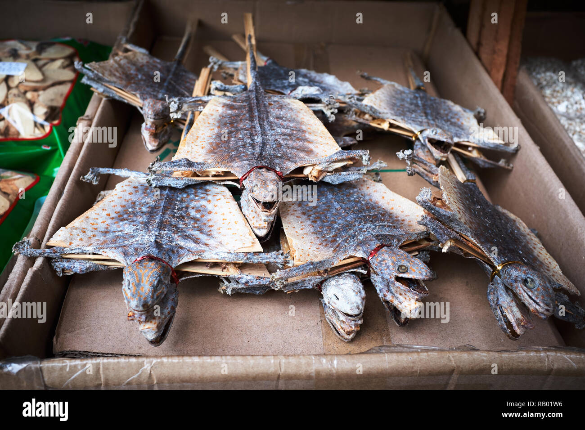A Hong-Kong, les lézards peuvent être dégustés dans la rue sous forme de brochette, en soupe ou marinés dans l'alcool. Ils ont des vertus médicinales comme traiter le rhume et redonner de l'énergie.
escamoles
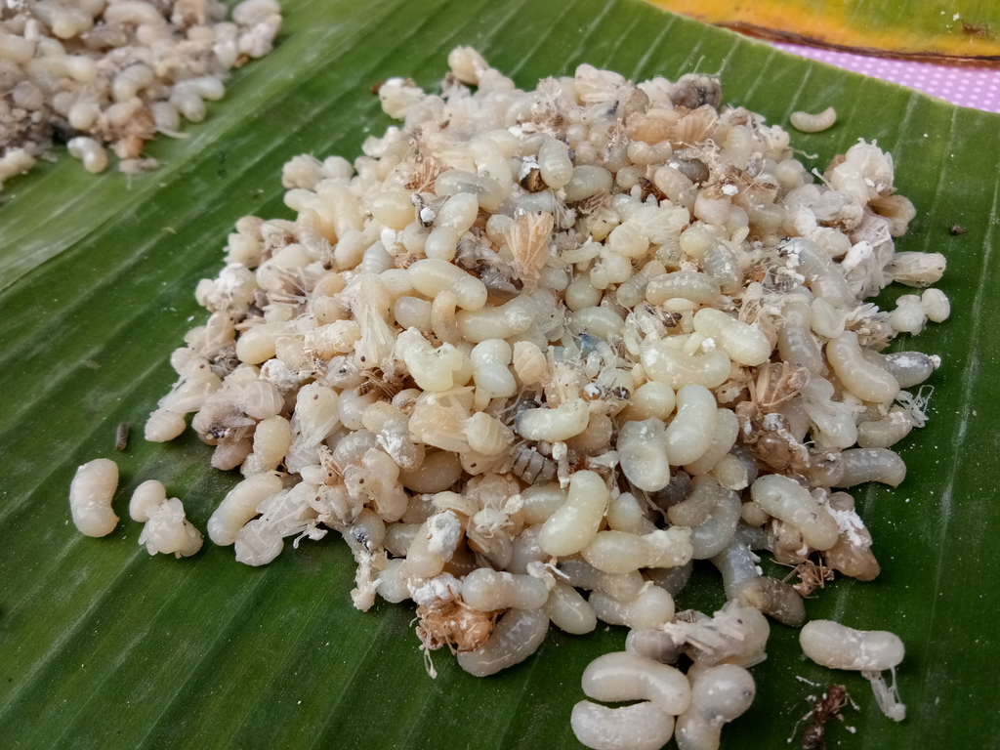Les Mexicains adorent les escamoles, qui ne sont autres que des larves de fourmis noires géantes. Pour les manger, il faut les faire frire dans des épices et du beurre puis les mettre en tortilla.
durian
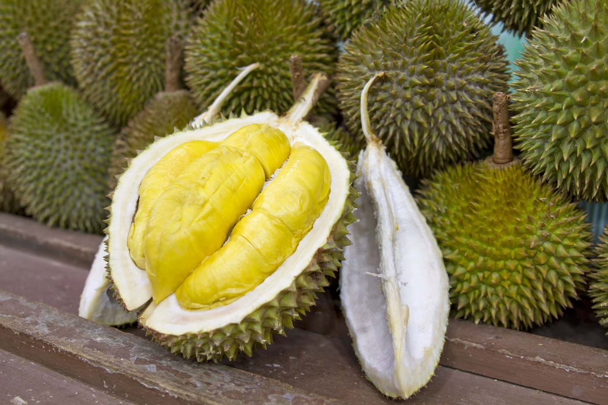Fruit asiatique, le durian se consomme dès qu'il a été cueilli et frais, sans fioriture. Reconnu pour ses vertus sur la santé, le durian se montre nourrissant et agréable à déguster. Mais souffre aussi d’une odeur insupportable, son odeur peut être décrite comme celle des excréments de porc.
penis tigre
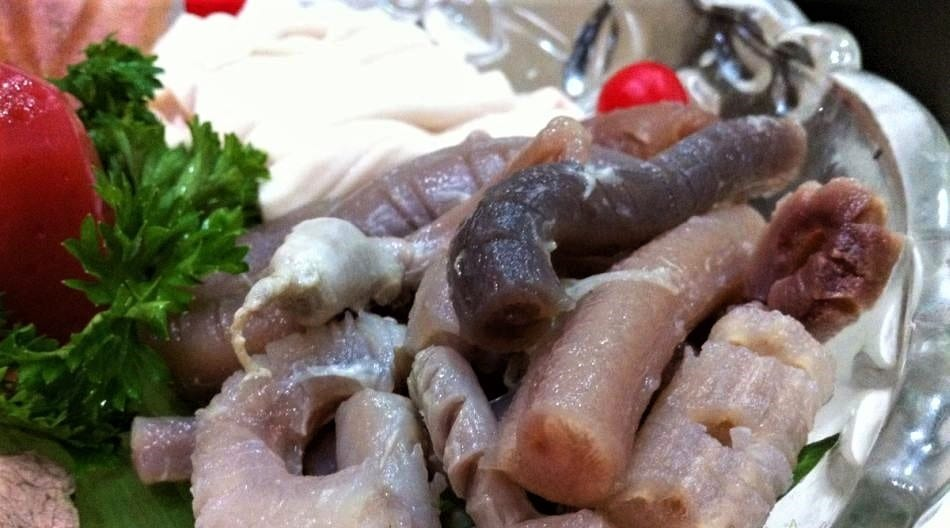Car, en Chine, les penis sont réputés bons pour la santé, mais surtout aphrodisiaques.
oeufs de cent ans
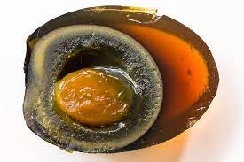Est un ingrédient de la cuisine chinoise élaboré en conservant les œufs de canard, de poulet ou de caille dans un mélange d'argile, de cendre, de sel, de citron vert et de paille de riz pendant plusieurs semaines à plusieurs mois.
Mygale frite
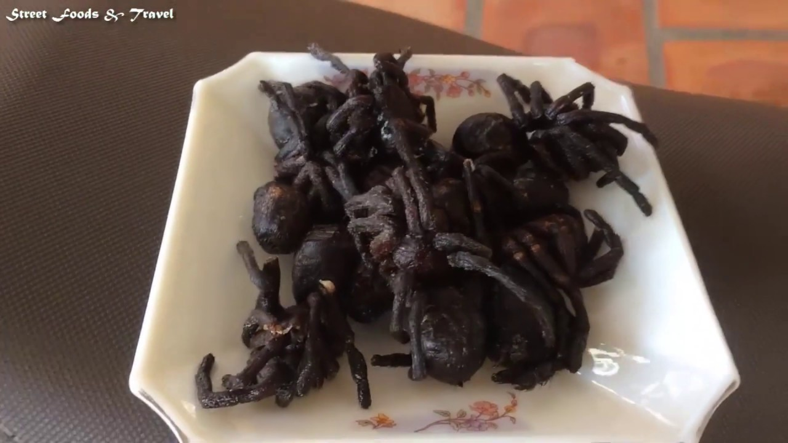L'araignée frite est un plat de cuisine cambodgienne. L'araignée frite a un goût amer, contrebalancé par le jus sucré et chaud dans lequel l'araignée a mariné. L'abdomen peut être consommé, mais il est rempli d'une pâte noire qui peut contenir des œufs et des excréments.
tete d'agneau
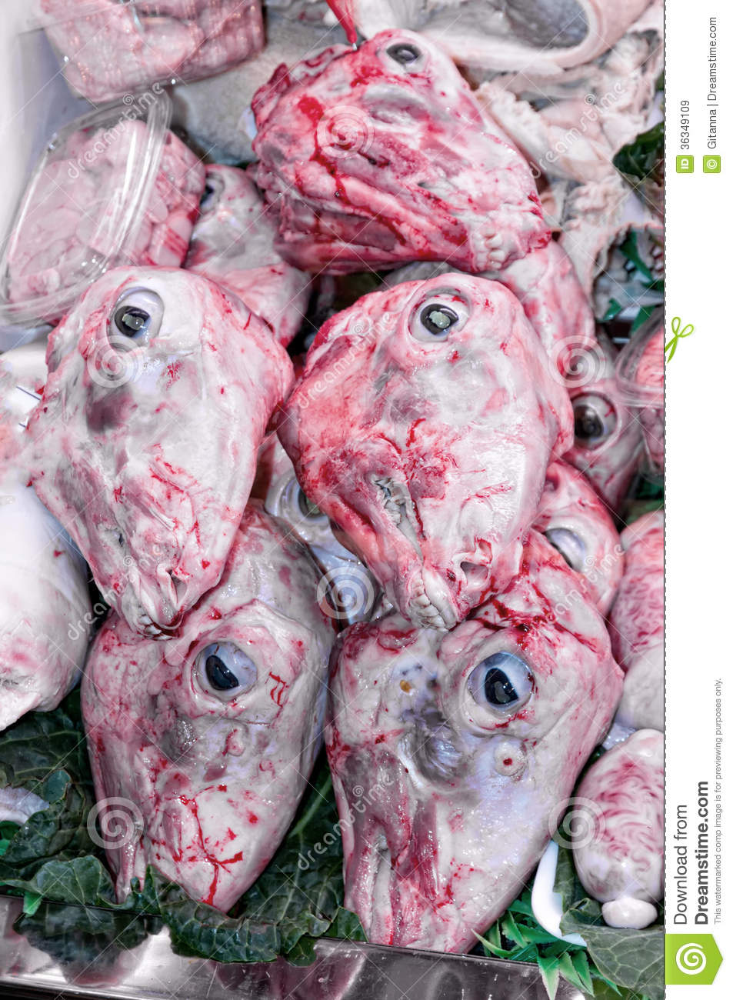Aussi appelé Smalahove, ce plat est servi en Norvège pour les fêtes de fin d'année. Considéré comme un repas traditionnel, on peut donc manger, les yeux, les oreilles ainsi que la langue et tout ce qui peut être mangé.
soupe de chauve souris
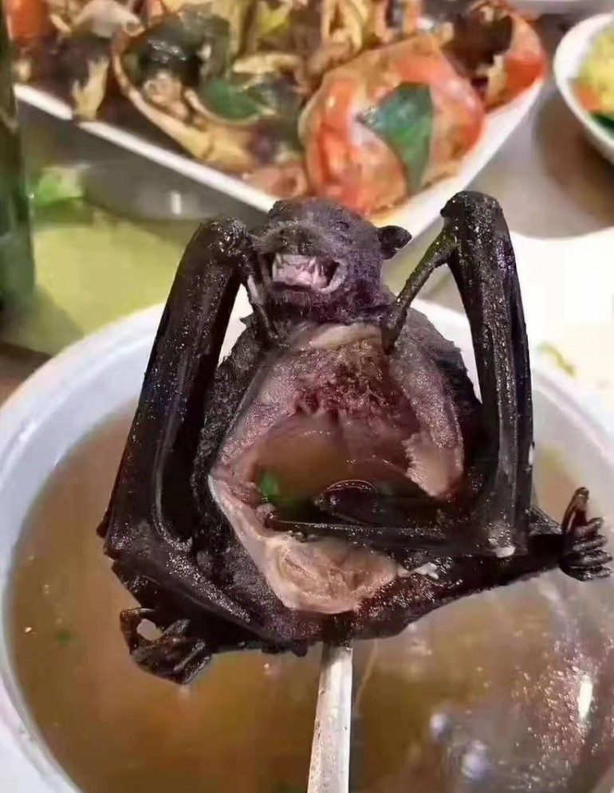La viande de chauve-souris fait partie des viandes de brousses qui sont source d’alimentation humaine, principalement dans certains pays d'Afrique subsaharienne, d’Asie et d’Océanie cette viande a un faible taux de matières grasses et est riche en protéines. C'est un mets très recherché par les Chinois qui considèrent parfois que sa consommation peut guérir l’asthme, les affections rénales et systémique.
Rognon de boeuf
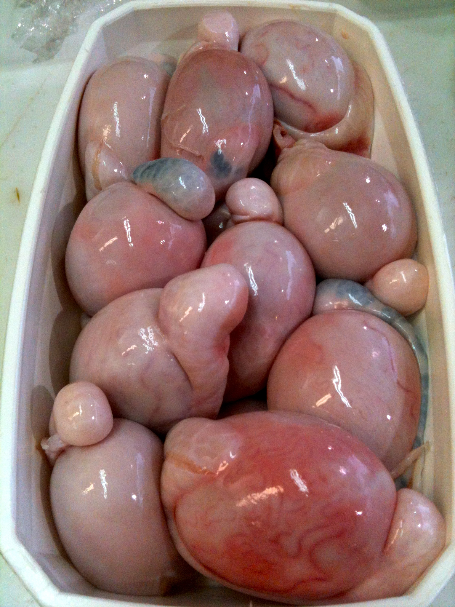Les testicules de taureau à l'ardennaise se préparent avec des oignons. Ce plat typique de Belgique est fait à base de testicules de taureau dont on extrait uniquement l'intérieur afin de le cuisiner.
Kiviak
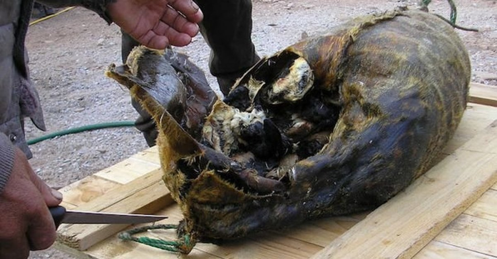Est constitué de mergules, des petits oiseaux, fermentés dans le corps d’un phoque. Un phoque peut contenir jusqu’à 500 oiseaux (entiers), on le scelle ensuite avec de la graisse avant de le coudre, puis on laisse le tout macérer sous une pierre environ 7 mois.
soupe de serpent
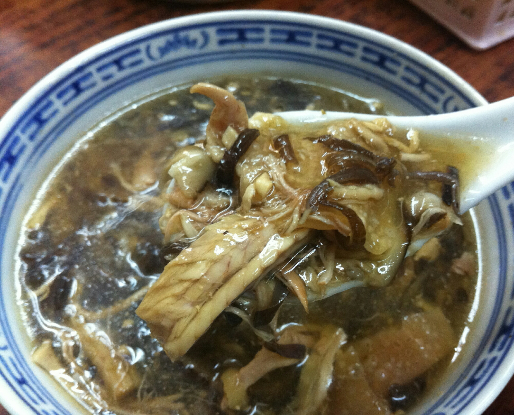Le serpent est abattu en direct devant le consommateur avant d’être débité. On fait cuire la queue dans un bouillon et on la sert en soupe, on récupère le venin, la bile et le sperme que l’on sert dans de petits verres à shot pour accompagner la soupe.
Hàkarl (requin pisseux séché)
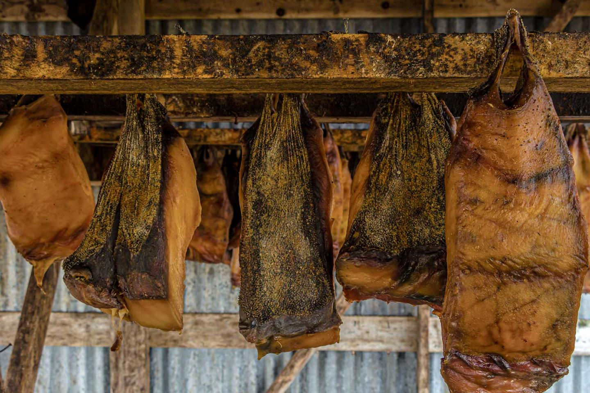Préparée avec une espèce de requin qui n’urine pas, sa chair est saturée d’acide urique ainsi que d'oxyde de triméthylamine, une neurotoxine dont les effets sont proches de ceux de l’ivresse. Pour que la chair soit consommable (sinon elle est toxique), le requin est enterré dans le sol 6 à 12 mois avant d’être fumé
Poulpe vivant
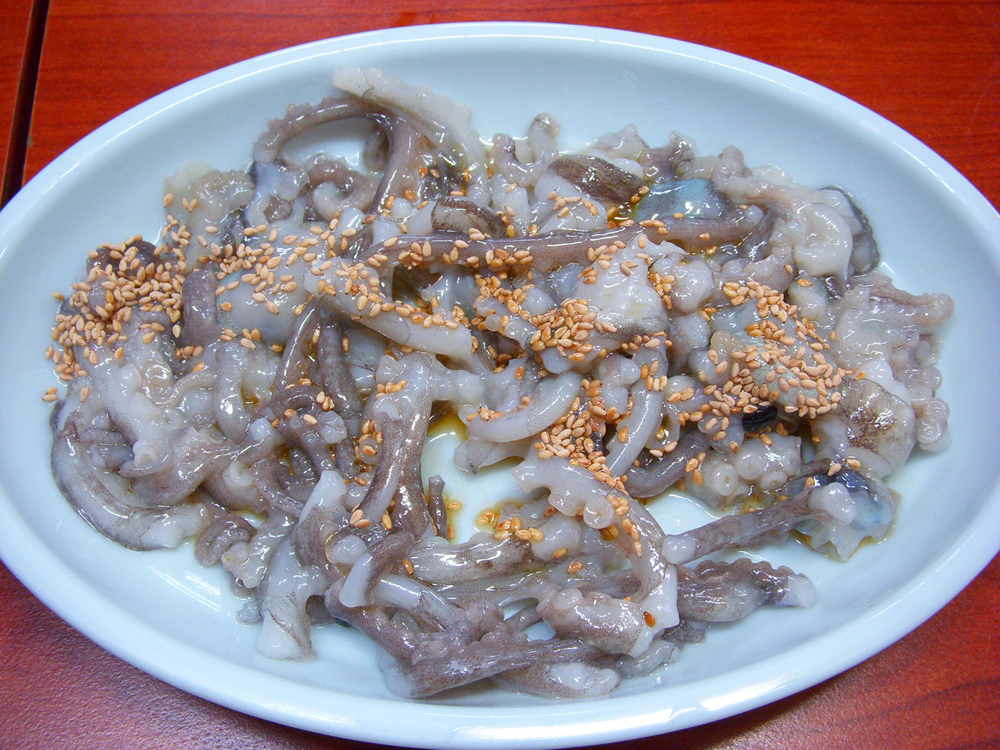Ce met consiste en une petite pieuvre coupée en morceau vivant et dégustée tout de suite avec de l’huile et des graines de sésame quand il bouge encore. Ce plat doit être mangé avec une grande attention, car les ventouses sont toujours actives lors de l’ingestion et peuvent alors se coller aux parois de la bouche ou de L’œsophage créant ainsi un risque d’étouffement.
vin de souris
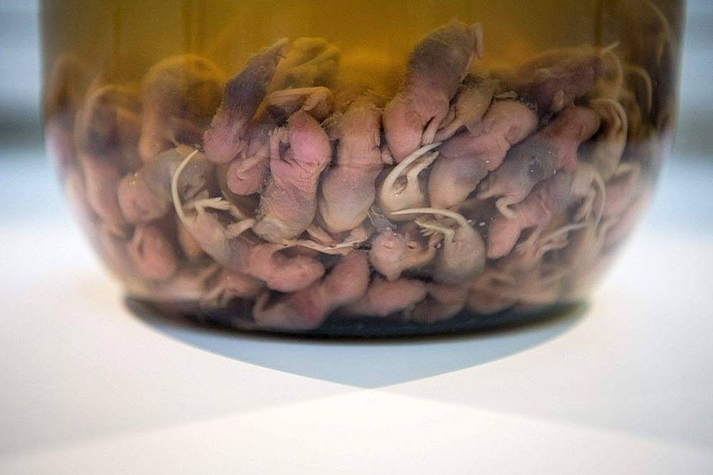L'idée est de noyer une famille de souris dans une cuve de vin et de laisser fermenter le tout pendant un an. Selon les Chinois, ce vin serait tonique pour la santé et permettrait de guérir l'asthme, les affections de la peau et les problèmes de foie.
Surströmming
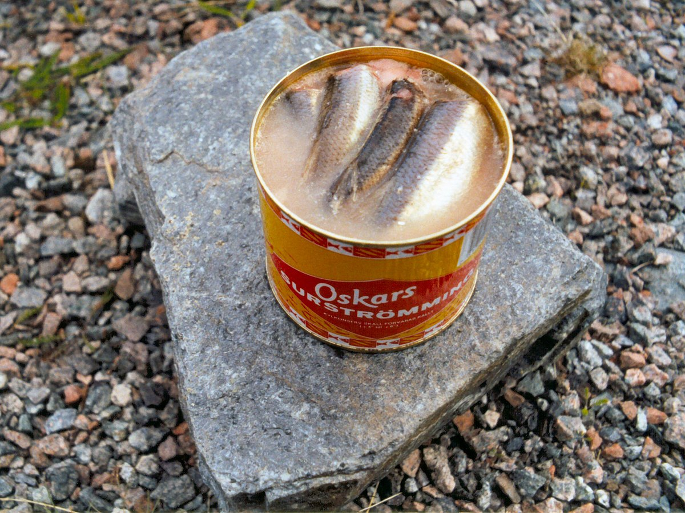Le Surströmming est un poisson (hareng de baltique) en conserve fermenté qui est tellement fétide qu’il est surtout consommé à l’extérieur à cause de la puanteur.
foetus humain
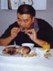Ce n'est pas commun ou accepté partout dans le monde. Nous avons tous entendu les récits xénophobes de Chinois mangeant des fœtus. C'est presque certainement faux. Cependant, une série de photos montrant un Chinois en train de manger un fœtus humain ont été publiées sur Internet. Il s’est avéré qu’il était un artiste et la série photographique était l’une de ses œuvres - intitulée « Eating People».
cerveau de singe vivant
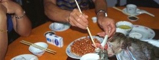Coutume horrible, encore répandue dans certains pays d’Asie. Cette pratique consiste à manger en groupe la cervelle d’un singe vivant (ivre et inconscient), après lui avoir fracassé la boite crânienne à l’aide d’un marteau.
Casu Marzu
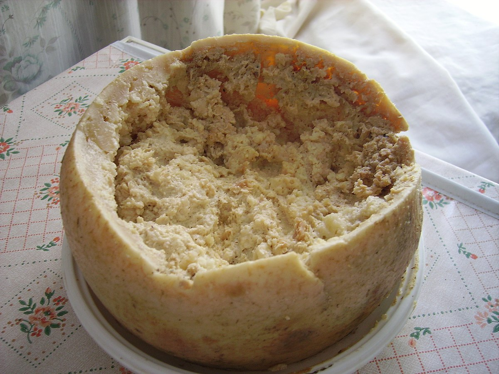Fromage illégal italien, remplit de larves introduites délibérément, pour favoriser la fermentation et la décomposition du fromage. Le fromage devient toxique, à partir du moment ou les larves meurent, il faut donc le manger avec les larves en vie. Les laves ont la capacités de sauter a 15cm il faut donc faire attention a ses yeux, et en plus elles survivent aux acides de l’estomac, il faut donc bien les macher, sinon elles peuvent percer l’estomac ou les intestins.
Balut
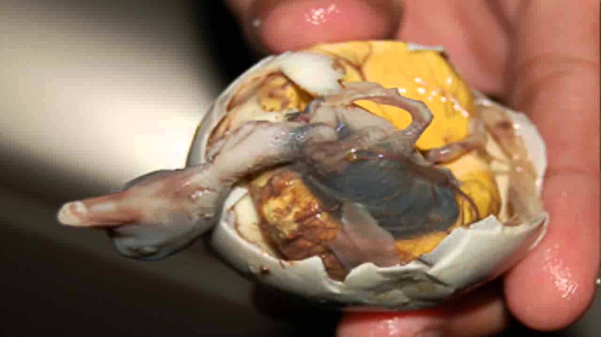Plat d’Asie du Sud-Est, a partir de fœtus de canard dans son œuf. On fait bouillir l’œuf (avec l’embryon déjà bien développé, bec, pattes et plumes comprises) dans un mélange de vinaigre et de sel ou plus simplement cuit à la vapeur. On le déguste ensuite en une bouchée avec un peu de sel ou de piment. C’est à priori un fort aphrodisiaque.